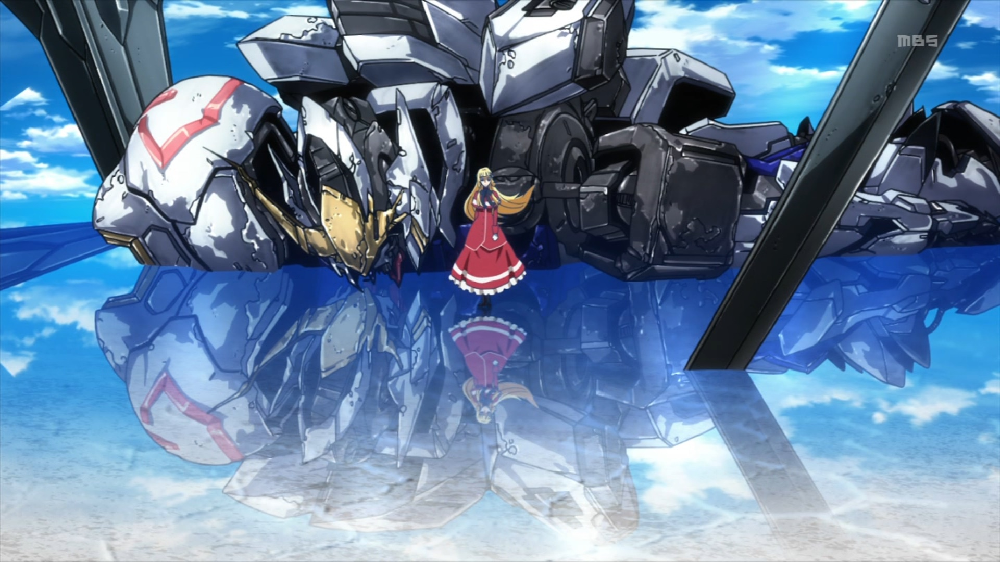

UC纪元
Sunrise公司制作，由富野由悠季担任总导演，由安彦良和担任人物设计的原创电视动画作品。是日本真实系机器人作品的元祖级作品。其自创宇宙纪年UC.0079年，故此也习惯称为“高达0079”。本作以地球、宇宙为舞台，其中反派吉翁军带有浓烈的德军气息。开创了高达系列。后续作品中大多以此为起点展开故事。
Seed系列
地球联合与Z.A.F.T.因为经济的摩檫而引起对立，正处于胶着状态，两者试图循外交手段来解决纠纷，但种种问题把两方塞在岔道中，最后终于宣布开战。两派的战与和在所谓的“血染情人节”事件后变成了彻底的战争，情人节期间，人类利用核弹攻击了新人类的卫星，造成大量伤亡。两方势力的全面开战直接导致了一些事件的发生，比如将第三方中立势力拖入战斗，也把一些少年卷入战争的旋涡。
逆袭的夏亚
经历多年动荡生涯的夏亚，对地球联邦政府已彻底不报希望。
复出的目的，是将地球联邦政府，以及地球居民彻底消灭！其手段之激烈程度，在人类史上也是空前的，在他的计划中，攻击的方式不再是像以往那样落下殖民卫星，而要把小行星阿克西斯推向地球，从而引起巨大的气候异变，使另一个冰河期降临在地球上，基本灭绝地面的住民，以此达到净化人类的目的。
SD三国传
舞台是传说中的大陆“三璃纱”，敢达们驰骋于这个战乱的时代。
在传说中的大陆“三璃纱”，暴虐的太师董卓扎古暗杀了当时的皇帝，夺取了皇帝的证明圣印玉玺，成为了三璃纱大陆的新支配者，而后，更多的黑暗也开始蠢蠢欲动，欲图笼罩三璃纱

铁血的奥尔芬斯
从前曾发生被称为“厄祭战”的大战。战争结束后经过了三百多年。
地球圈失去了以往的统治方式，改由新的支配体系构筑了全新的世界。然而短暂的和平到来的另一面，却是有新的战火即将从遥远的火星圈上延烧而来。